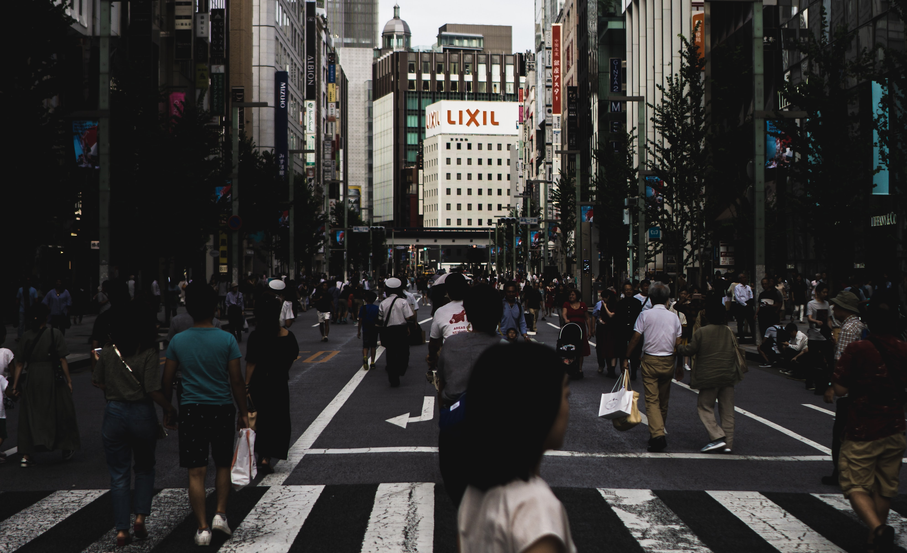
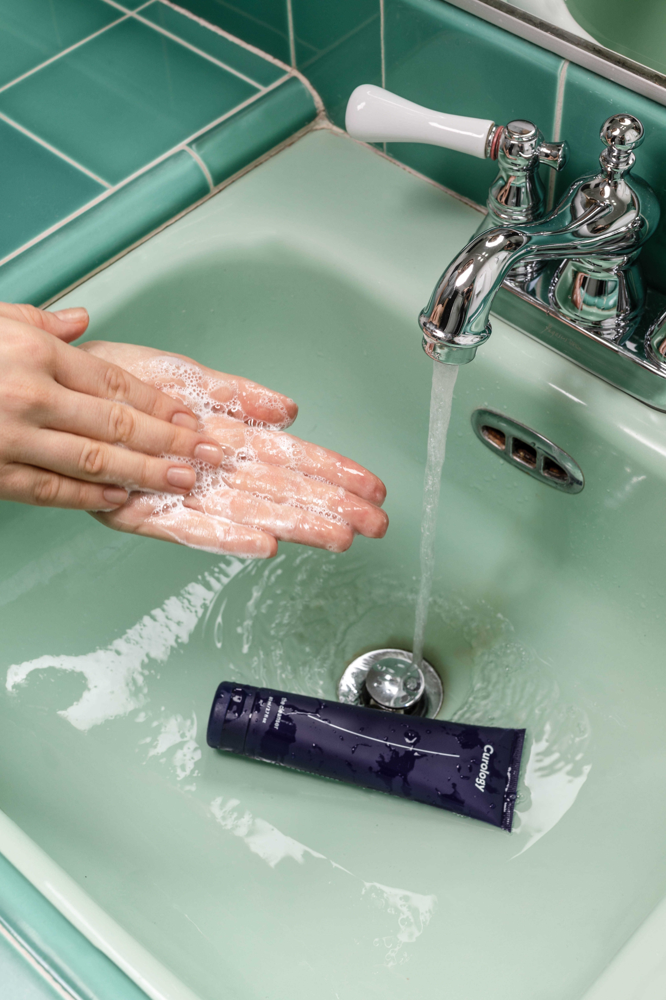
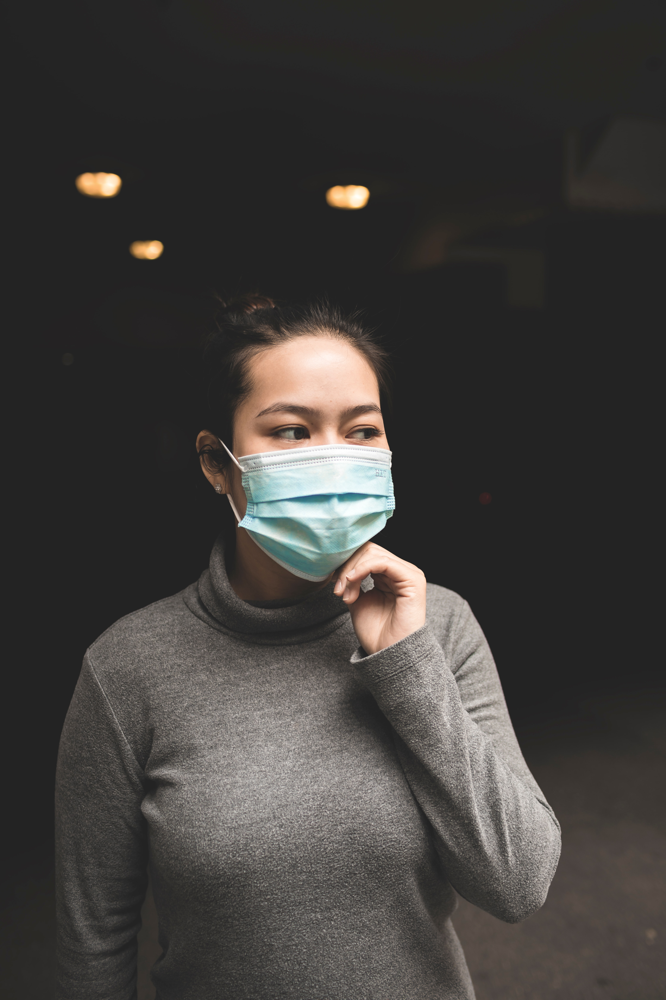
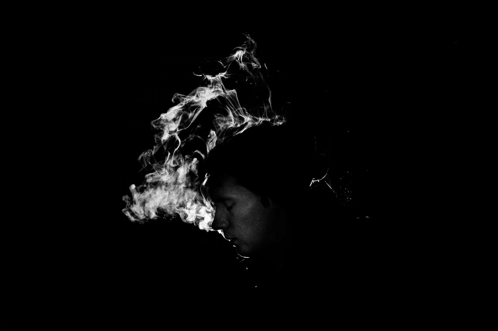

corona 예방법
신종 코로나바이러스 증상잠복기는 2일 ~ 14일로
평균 7일로 나타납니다잠복기에는 별다른 증상이 없으며
초기 증상이 나타나 입원한 환자들을 보면 평균적으로
발열 | 기침 | 호흡곤란 증상을 느끼는 환자들이 대다수이며
가래 | 근육통 | 두통 | 객혈 증상을 보이는 환자들도 보입니다
발열 37.5℃ 및 호흡기 증상이 주로 나타나며
특히, 잠복기가 14일이라고 보았을 때
2주 간 증상이 없을 수 있습니다.


1.북적북적 사람 많은 장소 피하기-너무나 당연하지만그 만큼 가장 기본적으로 지켜야 합니다
이럴수록 우리는 일상적인 행동에도 더 더욱 주의가 필요한데요!
특히 확진자와 접촉해 감염된 2차ㆍ3차 확진자가
늘어나기에 더욱 더 주의를 기울여야 합니다
2.30초이상 꼼꼼히 손 자주씻기-알콜로 바이러스를 다 죽일 수는 없습니다
손소독제보다는 비누칠해서 손을 씻는게 나으며손톱을 짧게 깎아 손톱밑도 깔끔하게 잘 닦아주어야 합니다 한번 손을 씻을 때에는 30초 이상꼼꼼하게 개인위생 관리를 철저히 해야합니다!
3.외출시 마스크 필수!-모두가 알고 있는 필수템인만큼
우리에게 중요한 역할을 해주니 마스크 착용은 필수입니다!
4.기침은 옷 소매에 가리고하기-손, 벽, 다른 곳에 하는 곳보다
옷 소매에 기침하는 것이 가장 감염될 확률이 적습니다
5.건조한 환경 피하기 물 많이 마시기-바이러스는 건조한 환경에서
활발하게 증식합니다
미지근한 물은 체온에 변화를 주지 않아
무리없이 마시기 좋고
물을 마심으로써
구강과 인후도 씻어낼 수 있으니
배부를 정도로 물을 많이 마시면 좋습니다!
6.면역성에 좋은 식품 섭취하기-파프리카, 당근, 고구마. 호박키위, 토마토, 호두, 아몬드, 홍삼, 유산균 등 "
면역력이 약할수록 바이러스에 더 쉽게 노출됩니다
면역성에 좋은 식품을 많이 섭취하여 몸을 보호해주세요!